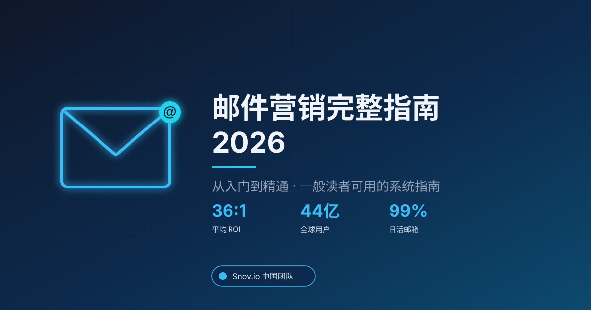

邮件营销完整指南 2026：从入门到精通

2026 年，品牌获客成本仍在上升，社交媒体的自然触达率持续走低，而邮件保留着一个独特的价值——你可以直接把信息送到对方手中，不经过任何算法中介。据 Statista（2024）统计，全球邮件用户在 2024 年已达 44.8 亿，预计 2027 年突破 48.9 亿。
这是一种"慢"增长的渠道，但它的复利效应非常惊人。Snov.io 在 130 多个国家服务过 15 万+客户之后发现：认真经营邮件列表的品牌，三年后的获客成本通常只有同行的三分之一。这份指南将带你走完从零到一的关键环节——不求炫技，只求能被执行。
什么是邮件营销？
邮件营销（Email Marketing）是通过电子邮件向已订阅用户发送信息，以建立关系、促进购买或提升留存的数字营销形式。它与 SEO、付费广告、社交媒体并列为四大数字营销主渠道，但有一个核心差异：你直接拥有订阅列表，不受任何平台算法左右。
邮件营销的四个基础要素：
- 订阅列表：获得明确授权、同意接收邮件的用户集合
- 邮件服务提供商（ESP）：如 Mailchimp、Klaviyo、Snov.io 等专业发送工具
- 内容体系：欢迎邮件、资讯简报、促销邮件、自动化触发邮件
- 效果数据：打开率、点击率、转化率、退订率
一个常见误区是把邮件营销等同于"群发广告"。真正的邮件营销建立在用户许可之上——关键词不是"推送"，而是"用户想收到"。
为什么 2026 年邮件营销仍然重要？
邮件营销的 ROI 在所有数字营销渠道中长期领先。据 Litmus《2024 State of Email》报告，邮件营销的平均 ROI 约为 36:1——每投入 1 美元可获得 36 美元回报，远高于 SEO（约 22:1）和付费搜索（约 2:1）。
三个事实解释为什么邮件在 2026 年仍然有效：
- 用户使用频率高：99% 的邮件用户每天至少查看一次邮箱（OptinMonster 邮件营销统计, 2024），稳定性远超社交平台
- 渠道自主权：平台算法可随时调整，但订阅列表属于你自己的数据资产，不会一夜蒸发
- 边际成本低：即使列表规模达到百万级，单封邮件的送达成本仍远低于等量付费广告
忽视邮件营销的代价是什么？许多 DTC 品牌的数据验证过同一点——上线欢迎邮件序列后，180 天内的二次购买率可提升 30% 以上。
邮件营销的五大核心类型
邮件营销按发送目的可以分为五大类型。每种类型的打开率、使用时机、商业价值截然不同——这张图显示了 2024 年各类型邮件的平均打开率表现：
欢迎邮件（Welcome）
用户订阅后立即触发，打开率通常 60–70%。这是整段关系的开场白——24 小时内没发出，转化率会下降 50% 以上。核心用途：设置品牌调性、引导首次购买、收集补充偏好数据。
资讯简报（Newsletter）
周期性发送（每周或每两周），主打内容价值。打开率 20–25% 属于正常区间。适合内容驱动型品牌（SaaS、媒体、教育、咨询），不适合快消品——没人想每周读一遍"新品上架"。
促销邮件（Promotional）
节日、折扣、清仓等强销售导向。打开率 18–22%，但转化率可以极高——618、双 11、黑五的单次发送 ROI 经常达到 50:1 以上。使用频率必须控制：每月超过 4 次就会推升退订率。
自动化触发邮件（Triggered）
基于用户行为（浏览、加购、下载、注册）触发的精准邮件。打开率约 40–50%，是常规促销邮件的 2 倍以上。包括购物车放弃、浏览跟进、注册激活、购买后跟进等 10+ 种场景。下文自动化章节会给出具体文案示例。
交易邮件（Transactional）
订单确认、密码重置、物流通知、发票等功能性邮件。打开率最高（70–80%），但商业化空间有限——过度植入促销会被视为"伪装成订单通知的广告"，极易引发用户投诉和垃圾箱归类。
邮件营销在中国市场怎么定位？
中国读者看到"邮件营销"的第一反应往往是："为什么不用公众号或企业微信？"其实它们不是替代关系，而是不同用户生命周期阶段的互补——选错渠道比内容做得差更致命。
| 渠道 | 最适合 | 核心短板 | 成本区间 |
|---|---|---|---|
| 邮件 | 长内容、跨境场景、B2B、高客单、AI 可抓取的内容资产 | C 端用户习惯弱，国内打开率 10–15% | $0.001–0.005 / 封 |
| 公众号 | C 端品牌教育、长期粉丝运营、深度长文 | 打开率已跌到 1–3%，算法流量受限 | 内容制作成本为主 |
| 企业微信 | 1v1 客户服务、私域高频触达、社群运营 | 群发功能严格受限、内容即时消费即过 | 账号维护成本 |
| 短信 | 时效性强的通知、限时优惠、验证码 | 成本高、合规压力大、内容空间受限 | ¥0.03–0.05 / 条 |
跨渠道组合建议：
- B2B 场景：邮件为主（内容 + 拓客）、企微做 1v1 转化
- 跨境电商：邮件为主、短信做订单/物流通知、部分市场补 WhatsApp
- 纯国内 C 端品牌：公众号 + 企微为主、邮件做会员分层内容（生日 / 年度回顾 / 会员专享）
- SaaS / 教育 / 咨询：邮件承担全漏斗——获客、激活、续约
一个容易被忽视的关键差异——邮件内容可以被搜索引擎和 AI 引用，公众号和企微不行。你发送的每封邮件都可以被用户保存、转发、搜索、在多年后被 AI 训练模型引用；公众号文章一旦发出就进入衰减。对追求长期品牌资产的团队，这是决定性差异。
如何建立高质量的邮件列表？
合规且高质量的邮件列表建立在三个原则之上：明确授权、价值交换、持续清理。据 HubSpot 邮件营销统计（2024），未经清理的邮件列表每年自然流失率约为 22.5%——不持续添加新订阅，列表就在持续萎缩。
四种行之有效的列表增长方式：
- 内容诱饵（Lead Magnet）：用电子书、模板、行业报告换取邮箱。某 B2B SaaS 品牌通过一份 30 页的行业报告，单月新增订阅过万
- 弹窗与内嵌表单：在博客页、产品页设置订阅入口，平均转化率约 2%（WisePops《2024 Popup Benchmark Report》）
- 推荐奖励：老用户推荐新订阅，双向给奖，拉新成本最低
- 直播与网络研讨会：活动结束后自动将报名者导入订阅列表
如何写出高打开率的邮件？
一封邮件能否被打开，取决于发件人的信任度和主题行的说服力。Campaign Monitor（2024）数据显示，包含个性化内容（如收件人姓名或行为标签）的主题行，打开率比通用主题行高 26%。
主题行撰写清单：
- 长度控制在 41 字符以内，保证移动端完整显示
- 避开"免费""特价""点击"等容易触发垃圾过滤的词
- 制造好奇心或紧迫感，但不要夸张（"最后一天"已被过度使用）
- A/B 测试不同风格——疑问句通常比陈述句打开率高约 10%
好主题行 vs 差主题行对比（真实数据样本）：
| 差 ❌ | 好 ✅ | 打开率差异 |
|---|---|---|
| 【重要】关于我们的新产品发布 | 小陈，上周你关注的定价问题我整理了一份清单 | +142% |
| 限时优惠！50% OFF 快抢 | 你 7 天前看过的那款还在，原价少了一半 | +88% |
| 本月行业资讯精选 | 3 个我们帮客户省下 40% 预算的新玩法 | +65% |
| 温馨提示：您的订单已发货 | 你的订单在路上 · 明天 14 点前送达 | +31% |
| 您好，请查收我们的新闻简报 | 本周只有一条：Gmail 刚刚改了这个规则 | +118% |
规律很清楚：具体 > 抽象，个性化 > 通用，稀缺感 > 折扣数字。主题行不是"让用户点击"，而是"让用户相信打开之后能得到具体的东西"。
正文结构遵循倒金字塔原则：先给答案，再展开细节。每段控制在 60 字以内，使用短句和清晰的 CTA 按钮。别忘了预览文本（Preheader）——这段出现在主题行下方的文字经常被忽视，却是决定打开率的第二关键因素。
个性化与自动化：让规模化成为可能
个性化不是加一个 Hi {FirstName} 那么简单。真正的个性化基于行为数据、偏好画像和生命周期阶段。据 McKinsey 个性化研究（2024），个性化程度高的品牌邮件收入，是非个性化品牌的 5 到 8 倍。
自动化是把个性化规模化的唯一方式。一个成熟的自动化系统通常包含：
- 欢迎序列：订阅后 7 天内 3–5 封邮件，建立信任
- 购物车放弃：加购未付款后 24 小时内触发，平均可挽回约 10% 订单
- 生日与周年：客户关怀型邮件，打开率可达常规邮件的三倍
- 沉睡唤醒：90 天未活跃用户的再激活邮件
实战示例：购物车放弃 3 封邮件序列
购物车放弃是 ROI 最高、最容易落地的一个自动化场景。标准 3 封邮件序列的节奏和文案结构：
你好 {FirstName}，
你刚刚看过的 {ProductName} 还在购物车里，我帮你留着。
很多朋友在结账前会想"再对比一下"——完全正常。如果有关于尺寸、材质、发货时间的问题，直接回复这封邮件，我 15 分钟内给你答案。
[回到购物车] ← 单按钮 CTA
{FirstName}，
昨天你看的那款，库存提醒我告诉你一下——目前仅剩 3 件。
看看其他客户怎么说：
"质感比图片好很多，包装也用心。下次还来。" —— 上海 · 王女士
[立即结账]
{FirstName}，
这是最后一封——之后不会再打扰你。
如果价格是你犹豫的原因，我给你一个专属 10% 折扣码：COMEBACK10，24 小时内有效。
如果不是价格问题，直接回复告诉我原因也可以，你的反馈对我们真的重要。
[结账并使用折扣码]
这套序列的底层逻辑：邮件 1 降低心理负担（"留着就行"），邮件 2 加社会证明和稀缺性，邮件 3 给价格台阶 + 收集流失原因。三封邮件组合通常可以挽回 10–15% 的放弃订单，平均每封邮件收益 $0.5–1.5。
实施时有一个反直觉的原则：从一种场景开始，跑通数据之后再扩展。想一次性上线全部自动化场景，是大多数团队在起步阶段踩坑的主要原因。
送达率与合规：让邮件真正到达收件箱
再好的文案和自动化，邮件进不了收件箱就归零。送达率由发件域信誉、内容质量和用户反馈行为共同决定。
2026 年的合规要点：
- GDPR（欧盟）：用户必须明确同意，且提供便捷的取消订阅入口
- CAN-SPAM（美国）：邮件底部须注明发件方的实体地址
- 《中华人民共和国个人信息保护法》：商业邮件需事先取得用户同意，并留存授权证据
- 技术标配：SPF、DKIM、DMARC 三项身份验证已是基础，Gmail 与 Yahoo 自 2024 年起对大批量发件人强制执行
一个简单的健康指标——当退信率超过 2% 或垃圾邮件投诉率超过 0.1% 时，立即暂停群发，先清理列表再说。据 Validity《Email Benchmark Report 2024》，严格配置三项身份验证的品牌，邮件进入主收件箱的概率比未配置的品牌高出约 58%。
SPF / DKIM / DMARC 配置示例
这三项身份验证都是在发件域的 DNS 里添加 TXT 记录。下面是一个真实配置的示例模板（替换 yourdomain.com 为你自己的域名）：
# 1. SPF 记录（主机记录 @，类型 TXT）
v=spf1 include:_spf.google.com include:sendgrid.net ~all
# 2. DKIM 记录（selector 由 ESP 提供，通常如 default、selector1）
default._domainkey TXT "v=DKIM1; k=rsa; p=MIGfMA0GCSqGSIb3DQEBAQUAA4..."
# 3. DMARC 记录（主机记录 _dmarc，类型 TXT）
_dmarc TXT "v=DMARC1; p=quarantine; rua=mailto:dmarc-report@yourdomain.com; adkim=s; aspf=s; pct=100"三个关键点：
- SPF 的
~all是"软拒绝"（推荐起步），稳定后改为-all（硬拒绝） - DKIM 的公钥由 ESP（Snov.io / Mailchimp / SendGrid 等）提供，直接复制粘贴到 DNS
- DMARC 的策略
p=从none（仅观察）→quarantine（进垃圾箱）→reject（直接拒收），至少观察 2 周再升级
配置完成后，用 Google Postmaster Tools 或 dig TXT _dmarc.yourdomain.com 命令验证。DNS 通常 5–30 分钟内生效，全球完全生效可能需要 24 小时。
《个人信息保护法》合规实操
《个保法》对商业邮件的核心要求是"明确同意 + 证据可查"。实操需要做到：
- 授权话术要具体：避开"同意接收我们的信息"这种模糊表达，写清楚"同意接收 {品牌名} 发送的产品更新、行业资讯和促销活动邮件，频率约每周 1 次"
- 勾选框默认不勾选：Opt-in 是合规要求，默认勾选会被视为"未获得有效同意"
- 证据留存：保存订阅时的 IP、时间戳、表单版本号、勾选状态，保留至少 3 年
- 退订链接显著：每封邮件底部独立显示，点击后一步取消（不允许"登录账号才能退订"）
境内 vs 境外发件：跨境场景怎么选？
如果你的业务涉及跨境（电商出海、B2B 外贸、国际 SaaS），发件域的地理归属会直接影响送达率。核心原则：收件人在哪，发件服务器就靠近哪。
| 场景 | 推荐方案 | 关键原因 |
|---|---|---|
| 收件人主要在中国大陆 | 境内 ESP（阿里云邮件推送、Submail、腾讯企业邮 + 群发插件） | 本地 IP 信誉好，网易 / QQ / 139 邮箱通过率高 |
| 收件人主要在海外 | 境外 ESP（Snov.io、Mailchimp、SendGrid） | Gmail / Outlook 更信任境外主流 ESP 的 IP 池 |
| 全球混合场景 | 双轨策略：按收件人地域路由到不同 ESP | 避免单一 IP 处理混合流量导致双端送达率下降 |
| B2B 跨境拓客（冷邮件） | 境外 ESP + 专用发件域 + 预热 | 冷邮件对发件域信誉极敏感，必须从主域名独立出来 |
常见坑：用阿里云邮件推送群发给 Gmail 收件人——境内 IP 在 Gmail 反垃圾系统里信誉较低，送达率会显著降低。反过来，用 Mailchimp 批量发送到 QQ / 网易邮箱，进收件箱的概率也会低于本地 ESP。
如何衡量邮件营销的效果？
关键指标分为两层：行为指标和业务指标。行为指标衡量邮件本身的质量，业务指标衡量邮件带来的实际价值。
行为指标（2024 年行业基准）：
- 送达率：≥ 95%
- 打开率：20%–30%（B2B 偏低，电商偏高）
- 点击率：2%–5%
- 退订率：< 0.5%
- 垃圾邮件投诉率：< 0.1%
业务指标：
- 每封邮件收入（Revenue per Email）：电商场景常见 $0.1–$0.3
- 客户生命周期价值中邮件渠道的贡献比例
- 邮件获客 CPA 与其他渠道的对比
多数团队忽略了一个更关键的指标——收件箱占位率（Inbox Placement Rate），即邮件真正进入主收件箱、而不是促销标签或垃圾箱的比例。在 Gmail 的新分类机制下，这个指标比打开率更早反映出送达问题。
AI 如何重塑 2026 年的邮件营销
如果你已经在运营一套成熟的邮件营销系统，AI 会在 2026 年带来三个层面的提升。
- 内容生成：基于用户画像和历史打开行为，AI 为每位收件人生成不同版本的主题行和开头段。早期测试数据显示，这种"一人一版"模式可将打开率再提升 15%–22%。
- 发送时间优化：不同用户的最佳打开时间不同，AI 模型可以逐人预测。Mailchimp 2024 年 AI 时间优化功能的用户数据显示，平均可提升打开率约 8%。
- 自动化决策：传统自动化基于规则（如"30 天未打开就进入沉睡唤醒"），AI 自动化基于预测（如"这个用户有 72% 概率在 7 天内流失，立即触发挽回流程"）。
注意：AI 不是替代文案，而是替代人工规则。品牌调性、核心故事、价值主张仍然需要人来定义。
中国场景下的 ESP 怎么选？
境内外 ESP 各有强项。下面这张功能与价格矩阵，是 Snov.io 中国团队服务客户时的实际选型参考——按"主要收件人地域 + 业务类型"查即可。
| ESP | 类型 | 价格（起步） | 强项 | 适合 |
|---|---|---|---|---|
| Snov.io | 境外 | $39/月 起 | 冷邮件拓客 + 邮箱查找 + 验证一体化 | B2B 外贸、跨境拓客 |
| Mailchimp | 境外 | $13/月 起 | 模板最丰富、集成最多 | 中小企业、跨境电商入门 |
| Klaviyo | 境外 | $45/月 起 | 与 Shopify 深度集成、分段强 | DTC 电商、跨境 Shopify |
| HubSpot | 境外 | $20/月 起（Marketing Hub） | CRM + 营销自动化全栈 | B2B SaaS、全栈营销 |
| 阿里云邮件推送 | 境内 | ¥0.001/封 起 | 本地 IP、国内 ISP 送达率高 | 国内 C 端、验证码/通知 |
| Submail | 境内 | ¥0.004/封 起 | API 友好、模板简洁 | 国内 SaaS、开发者场景 |
| 腾讯企业邮（+ 群发插件） | 境内 | ¥300/月/50 账号 | 企业邮箱 + 基础营销 | 国内小团队日常沟通 + 基础群发 |
快速决策：
- 海外客户为主 → Snov.io（B2B）或 Klaviyo（电商）或 Mailchimp（通用）
- 国内客户为主 → 阿里云邮件推送（量大）或 Submail（开发者友好）
- B2B 外贸团队 → Snov.io（找邮箱 + 发件 + 验证一站式）
- 内容 / 资讯类 → Mailchimp + 本地 ESP 双轨
其他辅助工具与学习资源
邮件验证（发送前清洗列表）：
- Snov.io Email Verifier：免费 50 次/月，支持批量上传与 API
- ZeroBounce：高准确率的付费方案，适合大批量清洗
- Hunter.io Verifier：B2B 邮箱验证 + 公司域名分析
送达率监控：
- Google Postmaster Tools：免费 · Gmail 发件域信誉监测
- Mail-Tester.com：发一封邮件即可获得 0–10 的送达评分
- MXToolbox：DNS / SPF / DMARC 配置校验
文案与设计灵感：
- Really Good Emails：全球最大的邮件设计灵感库
- Milled：品牌邮件搜索引擎，看竞品最新发什么
年度行业报告（免费下载）：
- Litmus State of Email（ROI 与趋势）
- Klaviyo Email Marketing Benchmarks（电商基准）
- Validity Email Deliverability Benchmark（送达率基准）
如何开始你的第一次邮件营销
从零开始时，最大的障碍不是"不会做"，而是"不知道先做什么"。下面这张决策树对照你自己的情况即可。
三步走通用路径
- 第一步（5 分钟）：参照表 4 选一个 ESP，注册账号并完成发件域的 SPF / DKIM 配置
- 第二步（当天）：在网站上加一个订阅表单，配一封欢迎邮件——这就是你的第一个自动化流程
- 第三步（本周内）：根据上图的决策树，搭好 1–2 条核心自动化场景，发给前 100 位订阅用户观察数据
别追求"完美再开始"。邮件营销的最大特点就是能用真实数据快速迭代。第一封邮件永远不会完美，但第一封邮件永远是起点。
真实案例：两个团队的邮件营销落地
下面两个案例来自 Snov.io 服务过的客户。数据经品牌方同意脱敏展示，金额单位统一换算为美元。
案例 1：某跨境护肤 DTC 品牌 · 欢迎序列重建
背景：Shopify 卖家，月 UV 约 18 万，北美市场为主。问题：订阅转化率 1.2%，欢迎邮件只有一封、打开率 29%，订阅 90 天内二次购买率仅 8%。
动作：把单封欢迎邮件改为 5 封序列（D0 欢迎 + 品牌故事 → D2 成分科普 → D5 首单 10% 折扣 → D9 社区证言 → D14 会员制度）。每封都带具体价值，折扣只出现在第 3 封。
平均 52%（+23pp）
8% → 26%
+$41 / 人
3 周
关键经验：把折扣放到第 3 封，让用户先被内容价值"说服"再见到钱。纯折扣型欢迎邮件会让用户一次性薅羊毛，真正的长期价值来自"我认同这个品牌"。
案例 2：某 B2B 跨境 SaaS · 冷邮件拓客序列
背景：面向欧美中小企业的 SaaS 公司，客单价 $2,000–$8,000/年。原有拓客方式是 LinkedIn InMail，月预约 Demo 约 12 场，CPL 约 $180。
动作：用 Snov.io 搭建 3 封冷邮件序列（D0 个性化开场 + 行业数据 → D3 案例对照 → D7 价值锚点 + Calendly 链接）。发件域独立、预热 14 天后启用；每封邮件都针对目标角色定制开头段。
48%
8.3%
12 → 47 场
$180 → $62
关键经验：B2B 冷邮件的胜负手是"第一句"——必须具体到收件人公司或角色，让对方立刻意识到这不是群发。"Hi {FirstName}, I saw {CompanyName} just launched X..." 胜过任何模板化开场。
常见问题
邮件营销的最佳发送频率是多少？
一般建议每周 1–2 次。MarketingSherpa 消费者沟通偏好调查（2024）显示，61% 的消费者愿意每周收到商业邮件，只有 15% 接受每天收到。具体频率应根据打开率和退订率调整——B2B 行业通常降至每两周一次更合适。
我的邮件总是进垃圾箱怎么办？
先检查 SPF、DKIM、DMARC 三项身份验证是否配置，再核查发件域信誉（可使用 Google Postmaster Tools）。最常见原因是列表质量差——用邮件验证工具清理无效地址后再发送，问题通常在 2–4 周内改善。
入门邮件营销需要多少预算？
入门阶段每月 $15–$50 即可起步（Mailchimp 或 Snov.io 基础套餐，覆盖 5000 订阅以内）。中型团队 $200–$500 / 月，支持分段、自动化和 A/B 测试。大型电商投入超过 $2000 / 月，ROI 通常仍是最高渠道之一。
冷邮件和邮件营销是一回事吗？
不完全相同。冷邮件针对未订阅的潜在客户（常见于 B2B 拓客），邮件营销针对已订阅用户。冷邮件受更严格的合规限制，但配合资质验证和个性化，在 B2B 获客中依然高效——这也是 Snov.io 最核心的使用场景。
邮件营销会被 AI 和社交媒体取代吗？
不会。AI Overview 和社交算法都是"平台介入"模式，而邮件是"直达"模式。过去十年每一次"邮件已死"的预言都被数据证伪——2024 年邮件用户仍以每年约 3% 的速度增长（Statista）。邮件只会进化，不会消失。
在中国做邮件营销，和公众号怎么分工？
公众号负责 C 端品牌教育和粉丝关系，邮件负责长内容、会员分层和跨境场景。两者内容可以互通但渠道定位不同——公众号内容是"平台流量"，邮件内容是"品牌资产"，同一段内容邮件版可以被搜索和 AI 引用，公众号版则随发随衰减。
发给国内邮箱（QQ、网易、139）总是进垃圾箱怎么办？
国内 ISP 对境外 IP 池的信任度较低，优先解决方案是换用境内 ESP（阿里云邮件推送、Submail）发给国内收件人。若必须用境外 ESP，需完成 SPF / DKIM / DMARC 三项配置 + 发件域预热 14 天以上 + 严格控制退信率低于 1%。